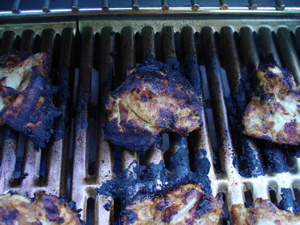

Mom's new grill
After several months of anxious searching, consulting with plumbers, appliance repairmen, contractors, my oldest son, and anyone wearing an orange apron whose attention I could snag at the local Lowe’s and Home Depot, I finally found a new back yard grill and had it installed. The problem is that the old grill, and I mean old—I’m guessing at least 30 or 40 years old, and we used it constantly since we moved into this house almost 7 years ago, was a built-in natural gas grill, set into concrete and hooked up to the gas line. So I had no idea how to get it out of there or where to find one to replace it. I must have gone to Home Depot 5 times pestering those people, and the same with Lowe’s, but to make a long story short, eventually my trustworthy appliance guy steered me to an out-of-the way place called Gas-Lite, on a small side street way down near the Allegheny River, that specializes in light fixtures but also sells just this type of grill.
An additional pressure on me was that I had been given a big chunk of money for my birthday back in February expressly for a new grill, by the family who has dinner with us every week, so I really had to get the grill thing taken care of. When I mention in my posts that I have 8, 9, or 10 people around my table those are the nights I’m talking about, when our friends the Ubers are eating with us, and the numbers depend on how many of their college-age children are home.
But tonight just the three of us had our first grilled dinner, and I made an old favorite, a recipe I clipped out of our local paper many years ago, something they call “Indian-Style Grilled Chicken”, but I think it’s more like tandoori chicken, with the paprika in it and the yogurt in the marinade. A note on the yogurt: I have used buttermilk when I haven’t had yogurt on hand and it works just as well (Yulinka, this note is for you!) I also use smoked paprika when I have it since I just love that flavor, and if I use hot curry powder I omit the cayenne pepper. (You can see from the photo I had some problems with sticking!)
Indian-Style Grilled Chicken

- 3 1/2 lbs. chicken parts, skin removed (I like the leg/thigh pieces for this recipe)
- 1 8-ounce carton plain yogurt
- 1 medium onion, quartered
- 2 large garlic cloves
- 2 tablespoons curry powder
- 1 tablespoon paprika
- 1 1/2 teaspoons salt
- 1/8-1/4 teaspoon cayenne pepper
Pierce chicken liberally all over with fork; then with a sharp knife make 1/2 inch-deep diagonal cuts on the meaty side about 1 inch apart. Place in a wide glass dish. Set aside. In a food processor or blender combine remaining ingredients. Process until smooth. Remove and refrigerate 1/4 cup of mixture. Pour remaining yogurt mixture over chicken, turning to coat both sides. Marinate by covering and chilling in refrigerator up to 24 hours, but at least 4. To grill: Place chicken on grill and cook over medium flame or coals, turning and basting with reserved yogurt mixture, until chicken is cooked through, about 35-40 minutes. Makes 4 servings.
Comments
Just the sight of that chicken is bringing back such strong taste/aroma memories. That dish is fabulous.
That chicken does look fabulous.
And I think it’s so cool that you have dinner with another family every week. That sounds like fun.
Add a comment